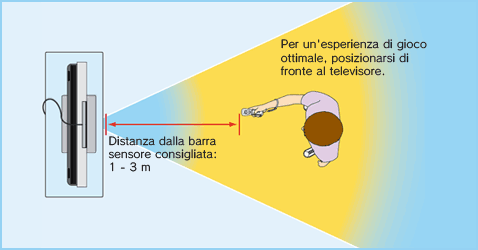

2 |
Precauzioni per l’uso |
 |
❶ Utilizzare il laccetto per telecomando Wii! Assicurarsi che tutti i giocatori che utilizzano il telecomando Wii indossino il laccetto per telecomando Wii (RVL-018 o RVL-018A) facendo scorrere il passante per assicurarlo al polso. Quando si condivide lo stesso telecomando Wii fra più persone, assicurarsi che ognuno usi correttamente il laccetto per telecomando Wii. L'uso del laccetto aiuta a impedire che il telecomando Wii cada o venga scagliato accidentalmente qualora se ne perda il controllo durante il gioco. 

❷ Impugnare saldamente il telecomando Wii e non lasciare mai la presa! Anche se si sta usando il laccetto per telecomando Wii, assicurarsi di non lasciare mai la presa del telecomando Wii e di non compiere movimenti eccessivi. Ad esempio, in Wii Sports il modo corretto di lanciare la palla durante una partita a bowling è di rilasciare il pulsante B del telecomando Wii – NON LASCIARE LA PRESA DEL TELECOMANDO Wii. Se le mani diventano umide, interrompere il gioco e asciugarle. Qualora si eseguano movimenti eccessivi e il telecomando Wii sfuggisse di mano, il laccetto per telecomando Wii potrebbe rompersi e si potrebbe perdere il controllo del telecomando stesso. Ciò potrebbe causare danni alle persone o agli oggetti nelle vicinanze. Informazioni aggiuntive sull’uso del laccetto per telecomando Wii L’utilizzo del telecomando Wii durante il gioco può richiedere movimenti rapidi o vigorosi. Utilizzare il laccetto per telecomando Wii per evitare di perdere la presa del telecomando Wii e causare danni al telecomando stesso, alle persone o alle cose che si trovano nelle vicinanze.
Giocare in un ambiente con molto spazio libero! Mentre si usa il telecomando Wii, è probabile che ci si sposti. Quindi, è importante assicurarsi che tutto lo spazio in cui ci si potrebbe muovere sia libero da mobili, oggetti o altre persone, per evitare di urtarli accidentalmente. Inoltre, come indicato nel manuale di istruzioni della console Wii, si consiglia di lasciare almeno 1 metro di distanza fra sé e il televisore. 
Queste informazioni sono disponibili all’indirizzo Internet |

 |
 |
 |